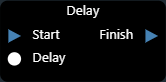
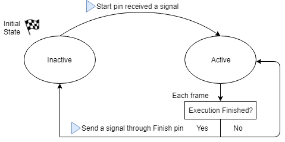
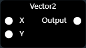
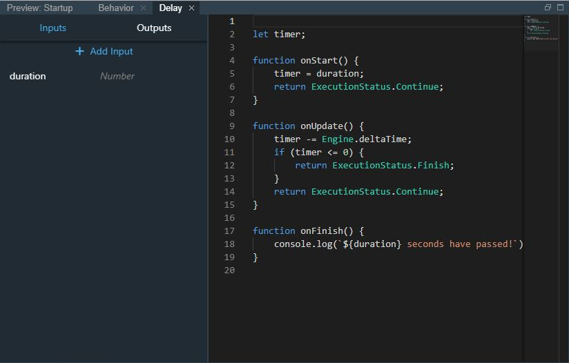
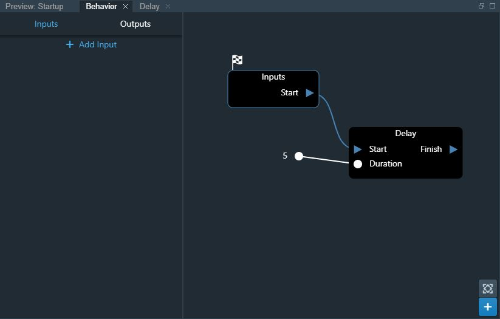
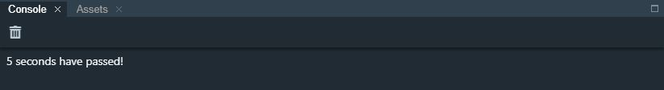
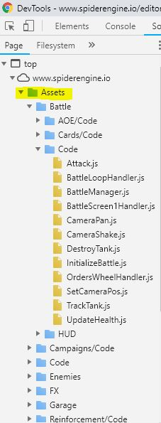
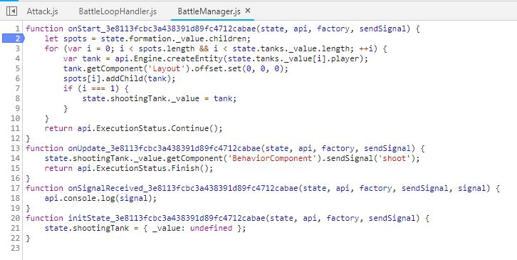

Content
![]()
Behaviors¶
Overview¶
You can build functionality by combining and connecting blocks within a Behavior.
A behavior is like a program:
- You control the execution flow by connecting Signal pins
- You control the data flow by connecting Data pins
{kind=link}
To create a Behavior, click on the Create Button in the Assets View and select Behavior.
Block Types¶
Execution Blocks¶
Execution blocks have 2 mandatory signal pins: a Start and a Finish.
In addition, they can have any combination of data and signal pins.

They are inactive by default, and only execute when the Start pin is hit.
When activated, the block executes once during the frame.
After that, it makes a decision whether to remain active or not.
Internal states of an Execution Block
Converters¶
Converters are specialized in converting data from an one format to another.
Unlike execution blocks, they don’t have Start nor Finish pins, only data pins.

They are always inactive, and only executed when needed.
Each time one of their output pins is being read, the converter executes, which guarantees that the information read is always up-to-date.
To create a Converter, click on the Create Button in the Assets View and select Converter.
Code Blocks¶
Code Blocks are the only way to implement custom functionality.
The supported programming language for now is Javascript.
You define the inputs, outputs, and logic within each block.
You can access the engine through an API and perform a wide range of functionality.
To create a Code Block, click on the Create Button in the Assets View and select Code Block.
Life-cycle Methods¶
Code Blocks have 3 life-cycle methods where you can implement your functionality.
They’re all optional and are only executed if defined by you:
onStart¶
Called every-time the code block receives a Start Signal.
This is called once during the frame.
Return value:
- ExecutionStatus.Continue: The code block will remain active, and onUpdate will be called every following frame untils it get deactivated again.
- ExecutionStatus.Finish: The code block will deactivate. If you defined an onFinish method, it will be called.
onUpdate¶
Called every frame while the code block is active.
Return value:
- ExecutionStatus.Continue: The code block will remain active, and onUpdate will keep being called.
- ExecutionStatus.Finish: The code block will deactivate, and onFinish will be called if defined.
Example Implementation¶
This is an example implementation of a Delay block.
It remains active for a number of seconds defined by a duration input. When the time is up, it prints something to the console:
- Delay Code:
let timer;
function onStart() {
timer = duration;
return ExecutionStatus.Continue;
}
function onUpdate() {
timer -= Engine.deltaTime;
if (timer <= 0) {
return ExecutionStatus.Finish;
}
return ExecutionStatus.Continue;
}
function onFinish() {
console.log(`${duration} seconds have passed!`);
}
Delay Code Block: A good practice to make your code re-usable is to expose important variables. In this example, we expose the duration variable, by defining it as an Input in the Code Block.
Delay Behavior: The code block is now usable in any behavior:
Result: After executing the above behavior, we can see the result in the Console:

Built-in Blocks¶
Spider Engine provides a set of common blocks to deal with core needs, such as flow control, input, collision response, etc.
Custom Data Objects¶
You can create custom data objects, containing any combination of properties.
To do so, click on the Create Button in the Assets View and select ObjectDeclaration.
You will then be able to create as many definitions of your object as you need, and reference them from your behaviors.
Debugging¶
Debugging Behaviors is possible using the Developer Tools in all browsers, but we recommend using Chrome for best experience.
Debugging in Chrome¶
Open the Developer Tools - see How to Open Chrome Dev Tools
Under the Assets folder, your will find a debuggable Javascript file corresponding to each one of your Code Blocks or Converters.
You will be able to select your code, place breakpoints, and watch variables, etc. See Debugging using Chrome Dev Tools

Note
At runtime, your code is sandboxed and only has access to a strict state and the Spider Engine’s API, for security reasons.
Therefore, the debuggable code is an automatically generated version of the code you write in the Code Blocks. It is slightly different, but fully debuggable and recognizable.